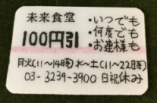

未来食堂では、50分のお手伝いで一食無料提供します。
一緒に働いて、本当のまかないを食べてみませんか？
『お腹が減ったから』
『未来食堂が好きだから』
『いつか自分のお店を持ちたいから』
理由は様々でも、一緒にまっすぐ頑張りましょう！
はじめに
一度以上、通常のお客様としてお店に来て頂いた方のみ応募できます。
お会計時、初回来店のお客様に割引チケットを差し上げています。この割引チケットをお持ちの方が対象となります。

著しく健康を害している方、衛生的に問題のある方、日本語/英語に不自由のある方などは当方の判断により参加をお断りする場合があります。ご了承ください。
申し込み方法
店頭にてまかない希望とお伝え下さい。
割引チケットを確認後、参加可能なお手伝い時間枠を選んで頂きます。
※まかない初回は店頭申込となります。二回目以降は電話やFacebookで申込できます。
お手伝い内容
昼（11:55〜12:45）：ランチのお客様の誘導など
夜（22:10〜23:00）：閉店後のお掃除など
詳細なマニュアルを別途お渡しします。
※衛生上、食品に触るお手伝いはお願いしません。
※説明5分、着替え5分の計1時間を目安としてください。
服装など
動きやすく清潔感のある服。無地程度の半袖か七分袖のTシャツ（ポロシャツ可）。肩より長い髪はひとつにまとめてください。爪は短く切ってください。スーツやハイヒールは避けてください。
※エプロンとバンダナをお貸しします。
FAQ
【Q】飲食未経験ですが大丈夫ですか？
詳細なマニュアルを事前にお渡しします。お手伝いしようという強い気持ちが一番大事です。
【Q】会社員ですが大丈夫ですか？
まかないは雇用とみなされるシステムではないため、副業を禁止している会社にお勤めであっても問題はありません。
特典
まかないさん限定のごはん会に参加できます。
『自分以外のまかないさんと知り合いたい』『まかないについて語り合いたい』など。何度でも参加できます。（ランチ、フリードリンク、おかし付き、800円。詳細計画中。毎月第一日曜日11〜16時を予定）
”一食プレゼント券”を差し上げます。
大切な人やご友人へのプレゼントに。精一杯もてなしさせて頂きます。
未来食堂を一日or半日、無料で利用することが出来ます。
友人を招いたり、自分のお店を開いたり。特別な時間をお過ごしください。
働いた後に食べる時間がない場合は、一食無料チケットを差し上げます。
お聞きしたいことがあればいつでもお問い合せください。ありがとうございます。